Relax on one of the most beautiful beaches in Martinique and pamper yourself in our Club Med Spa by PAYOT. You can also enjoy watersports such as scuba diving and water skiing and activities such as tennis, fitness and volleyball in this fantastic Creole paradise, so you and your family always have plenty to do.
Services within the package:
Unlimited catering throughout stay (no extra cost)
Your luggage delivered to and picked up from your Suite
State of the line clothes(customised designs cost extra)
Housekeeping in your Suite scheduled at the time of your choice
Turndown service
Drycleaning service at extra cost(Free if you stay is greater than 14 days)
Fresh working utilities(Hair-dryers,(European electrical sockets-220 Volts),Telephone,Expresso machine,
Radio alarm clock,
Television(s),
Ironing kit(Deluxe Room only)etc)
Minibar
Free Internet
Free Parking
Air Conditioning
Unlimited Wi-fi if stay is greater than 14 days
A divers' paradise in the Baie du Marin, a legendary spot.
Its bungalows are discreetly lodged in a tropical garden beside the white sand beach in superb Marin Bay.
A magical site where you can enjoy a taste of everything, alone or with family or friends.
Try water sports and the magnificent Club Med Spa*.
You'll be enchanted by the exotic flavours of the local cuisine and the joyful spirit of the Caribbean.
Water Skiing
Tennis
Scuba Diving
Spa
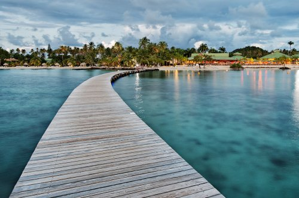
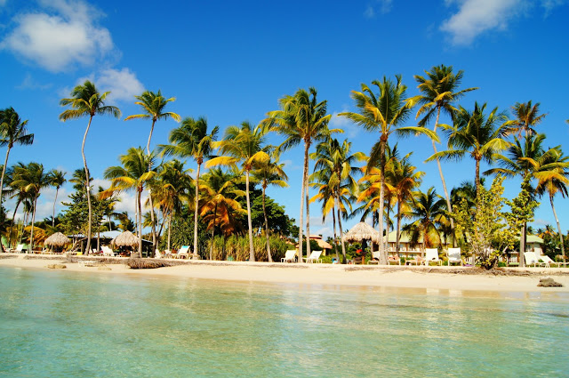
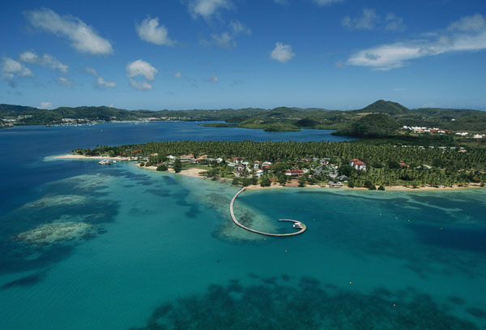
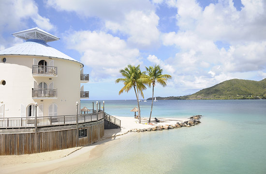
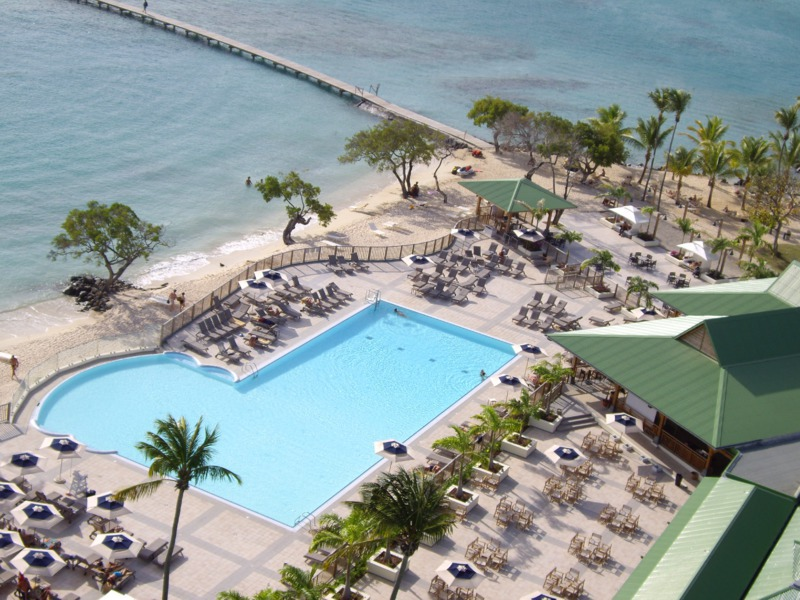
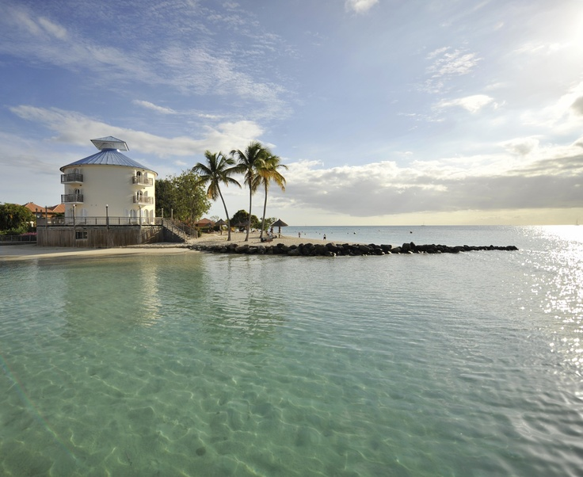
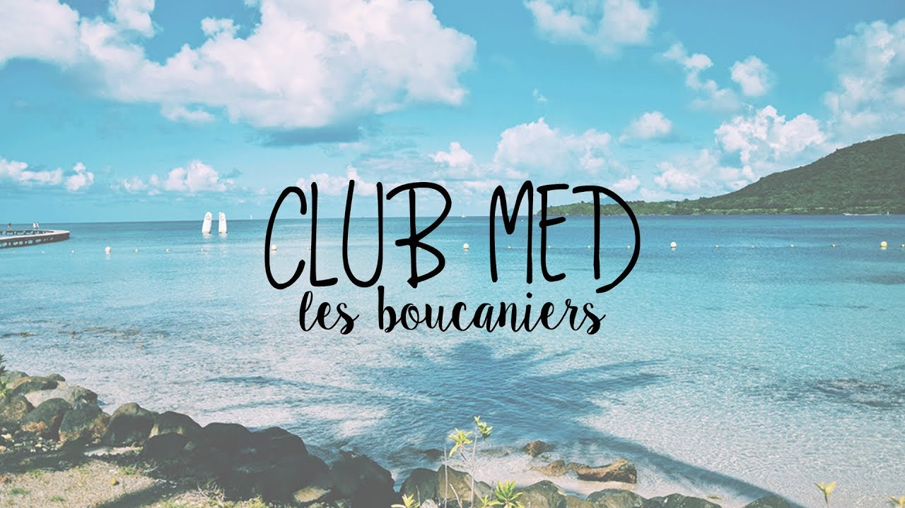
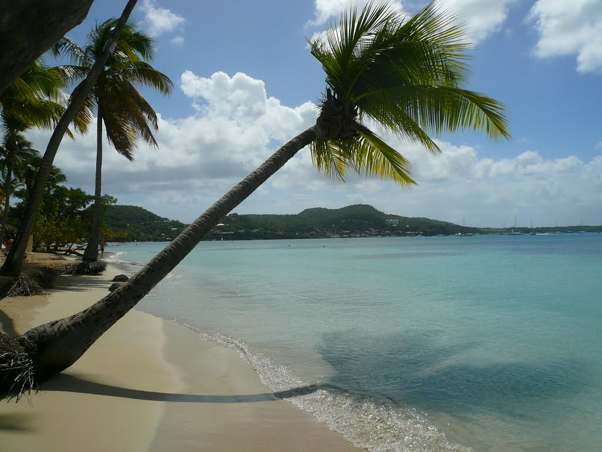
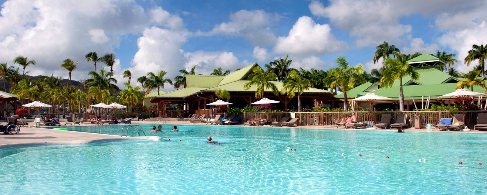
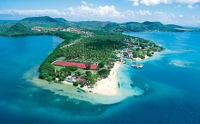
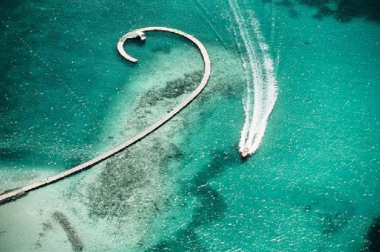
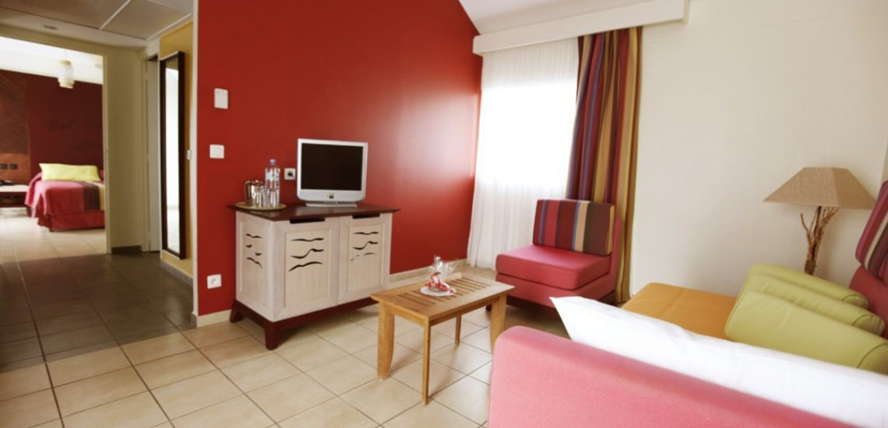
Standard Suite:
An ideal setting combining well-being with the exotic aswell as with one or two upper storeys (no lift) located
alongside a magnificent coconut grove this suite provides an excellent view of the island's most beautiful beach.
Guests: 1-4 people.
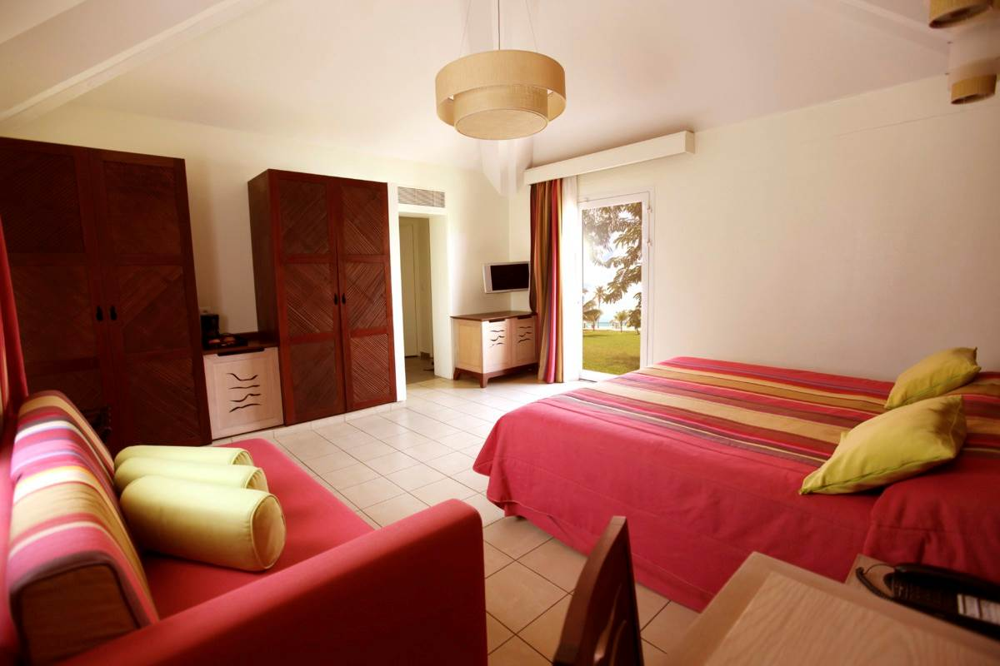
Large Suite:
Spacious accommodation with a lounge and a view over the luxuriant tropical gardens for nature-lovers,
or with Sea View over one of the most beautiful bays in the West Indies.
Guests: 1-4 people.
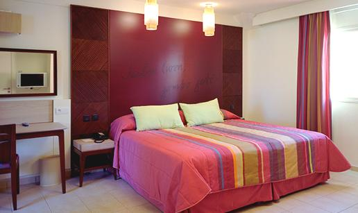
Deluxe Suite:
Pleasant room with balcony or terrace.
Guests:1-3 people